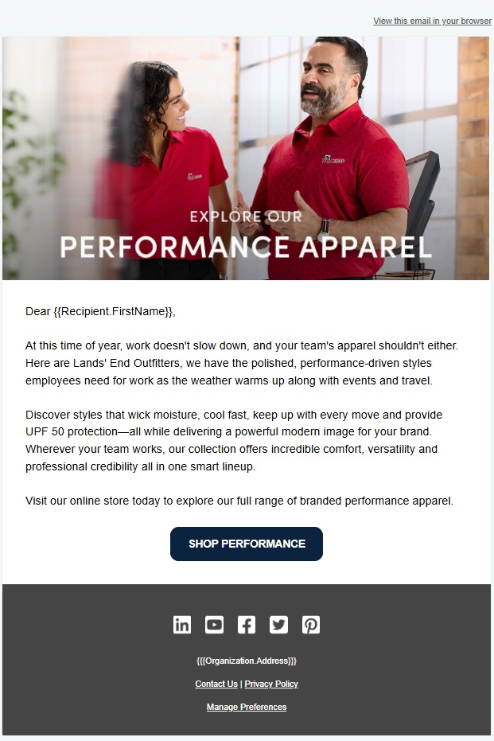

Progression
Each touchpoint should earn the next one and reduce friction for the customer.
A customer journey that begins before registration and continues through confirmation, reminders, attendance, follow-up, behavior signals, and the next best action.

The webinar is the event. The lifecycle is everything that helps the right person get there, engage, and know what to do afterward.
The challenge
The public-facing campaign promoted an Outfitters Live webinar with a clear registration path, a Spring/Summer collection preview, expert Q&A, and value for people responsible for uniform or branded apparel programs. The stronger portfolio story is the system around that moment: audience targeting, conversion, confirmation, reminders, follow-up, and reporting.
Journey design
Define who the webinar is useful for and align the message to their role, problem, and reason to care.
Use a focused CTA and landing-page path that makes the next action obvious.
Reduce uncertainty, reinforce value, and keep the event present without over-messaging.
Separate the event from the customer journey by asking what useful action should come next.
Review registration, email engagement, landing-page activity, and prospect behavior to inform future nurture decisions.
What this proves
Each touchpoint should earn the next one and reduce friction for the customer.
Engagement signals matter because they help answer who is ready for a different next step.
Post-event nurture is stronger when it supports the conversation Sales may need to continue.
Final send cadence, approved metrics, screenshots, and any safe examples of follow-up logic can deepen this case study later.
The value of webinar automation is not simply getting someone to click Register. It is creating a thoughtful path before and after the event so engagement has somewhere useful to go.